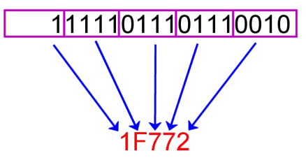

Numbering Systems
We can use any number of symbols to represent the same numeric value.
Example: write the number “ten” in base 1 through 10
| Base |
Symbols |
Representation 10(10) |
| 1 |
{ 1 } |
1111111111 |
| 2 |
{ 0, 1 } |
1010 |
| 3 |
{ 0, 1, 2 } |
101 |
| 4 |
{ 0, 1, 2, 3 } |
22 |
| 5 |
{ 0, 1, 2, 3, 4 } |
20 |
| 6 |
{ 0, 1, 2, 3, 4, 5 } |
14 |
| 7 |
{ 0, 1, 2, 3, 4, 5, 6 } |
13 |
| 8 |
{ 0, 1, 2, 3, 4, 5, 6, 7 } |
12 |
| 9 |
{ 0, 1, 2, 3, 4, 5, 6, 7, 8 } |
11 |
| 10 |
{ 0, 1, 2, 3, 4, 5, 6, 7, 8, 9 } |
10 |
| ... |
... |
... |
| 16 |
{ 0, 1, 2, 3, 4, 5, 6, 7, 8, 9, A, B, C, D, E, F }
|
A |
Everyday Numbering Systems
Base 10
- Our "counting" numbering system.
- Probably evolved from counting on fingers.
Base 12 and 24
-
Used for time
- 12 hours in half day
- 24 hours in day
-
Theory of why?
-
Twelve bones on non-thumb fingers that can be counted with the
thumb.
Base 60
-
Used for time
- 60 seconds in minute
- 60 minutes in hour
Computing Numbering Systems
Binary
Base 2
{ 0, 1 }
Why is it Used?
-
Digital signal can be in one of two states:
Examples
Digital Signals

Walkthrough:
117 / 5
Example 1
Convert the decimal number to binary: (12)10
| Division |
Quotient |
Remainder |
Binary Digit |
| 12 / 2 |
6 |
0 |
0 |
| 6 / 2 |
3 |
0 |
0 |
| 3 / 2 |
1 |
1 |
1 |
| 1 / 2 |
0 |
1 |
1 |
Answer:
(1100)2
Example 2
Convert the decimal number to binary: (21)10
| Division |
Quotient |
Remainder |
Binary Digit |
| 21 / 2 |
10 |
1 |
1 |
| 10 / 2 |
5 |
0 |
0 |
| 5 / 2 |
2 |
1 |
1 |
| 2 / 2 |
1 |
0 |
0 |
| 1 / 2 |
0 |
1 |
1 |
Answer:
(10101)2
Example 3
Convert the decimal number to hex: (37)10
| Division |
Quotient |
Remainder |
Hex Digit |
| 37/16 |
2 |
5 |
5 |
| 2/16 |
0 |
2 |
2 |
Answer: (25)16 = 0x25
Binary to Hex (and Reverse)
Hex offers a nice, compact way to represent binary numbers.
-
Break binary number into groups of 4 bits (called a
nibble).
-
Each nibble is guaranteed to be a number from 0-15; 0-F in hex.
- Convert each nibble to hex.
- Concatenate the results - put them back together.

Binary to Hex
Demo:
Which hex digits can we represent with four bits?
 Four bits to hex.
Four bits to hex.
Example 1
Convert binary to hex: (10100010)2
-
(1010)2
(0010)2
-
(10)10
(2)10
-
(A)16
(2)16
- 0xA2
Example 2
Convert hex to binary: 0xF0FF
-
(F)16
(0)16 (F)16 (F)16
-
(15)10
(0)10 (15)10 (15)10
-
(1111)2
(0000)2 (1111)2 (1111)2
- 1111000011111111
Binary Arithmetic and Encodings
Binary Addition
Same as decimal addition except - When carrying numbers into the next
column we represent them in binary form.
When adding a column you can either have (depending on remainder and row
values):
- zero = 0
- one = 1
- two = 10
- three = 11
Example 1
Calculate 01112 + 11102.
| 1 |
1 |
1 |
|
|
|
0 |
1 |
1 |
1 |
| + |
1 |
1 |
1 |
0 |
| 1 |
0 |
1 |
0 |
1 |
- Does this tie out if we calc in decimal?...
Complement Encoding
 Positive Signed Binary Number
Positive Signed Binary Number
 Negative Signed Binary Number
Negative Signed Binary Number
Complement = negation
Most significant bit (MSB) = digit with the
greatest value.
Big-endian = MSB on left
Little-endian = MSB on right
Why Use It?
-
Easy to implement in hardware.
- Easy to add and subtract.
One's Complement Encoding
- Used in early computers.
- Positive numbers do not change.
- Negative numbers are represented by flipping all bits.
-
Make sure to represent in correct number of bits (4, 8, 16, 32, 64,
etc.)
Subtraction:
- Take one's complement of second number.
- Add two numbers.
- Discard any carry over from MSB.
- Add 1 to result.
Example 1
Find the one's complement of 01001110.
Example 2
Find 710 - 410 using one’s complement subtraction.
- 710 = 01112
- 410 = 01002
-
One’s complement of 410 = -410 = 10112
- 01112 + 10112 = 1 00102
- Ignore overflow bit:
1 00102
- Add one: 00102 + 1 = 00112
Example 3
Walkthrough:
Find 11112 - 01102 using one’s complement
subtraction.
Two's Complement Encoding
- Used in modern computers.
- Positive numbers do not change.
-
Negative numbers are represented by flipping all bits and adding 1.
-
Make sure to represent in correct number of bits (4, 8, 16, 32, 64,
etc.)
Subtraction:
- Take two's complement of second number.
- Add two numbers.
-
Don’t need the extra step at the end to add one.
-
If there is carry over from MSB, discard it. Result is positive.
-
If there is no carry over from MSB, take two's complement of
result. Result is negative.
Example 1
Find the two's complement of 01001110.
- One's complement: 10110001
- Add 1: 10110001 + 1 = 10110010
- Answer: 10110010
Example 2
Find 710 - 410 using two’s complement subtraction.
- 710 = 01112
- 410 = 01002
-
Two’s complement of 410 = -410 + 1 = 10112
+ 1 = 11002
- 01112 + 11002 = 1 00112
- Ignore overflow bit:
1 00112
Example 3
Find 410 - 710 using two’s complement subtraction.
- 410 = 01002
- 710 = 01112
-
Two’s complement of 710 = -710 + 1 = 10002
+ 1 = 10012
- 01002 + 10012 = 11012
-
No overflow bit, so result is negative. We need to take the two's
complement of the result.
-
Two's complement of 11012 = 00102 + 1 =
00112